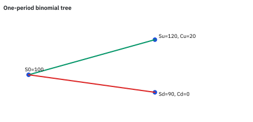
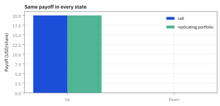
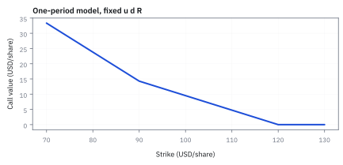
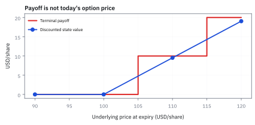

18.3 Binomial Tree Pricing
สร้างราคา option จาก hedge ที่ re-balance ได้ ไม่ใช่เดาทิศทางหุ้น
หุ้นราคา \$100 ดอกเบี้ย 2% ต่อปี (ทบต้นต่อเนื่อง) สัญญา put สไตรก์ \$100 อายุ 1 ปี หากสร้าง binomial tree 2 ขั้น โดยหุ้นขึ้น $u=1.20$ และลง $d=0.8333$ ต่อขั้น ออปชันแบบอเมริกันมีราคาเท่าใด และต่างจากแบบยุโรปอย่างไร?
เฉลย: ความน่าจะเป็น risk-neutral $q=0.4820$ โดยที่โหนดขาลง (ราคาหุ้น \$83.33) ควรรีบใช้สิทธิก่อนกำหนดเพื่อรับเงินสด \$16.67 (ดีกว่าถือต่อที่ได้ \$15.67) ส่งผลให้ราคา put อเมริกันวันนี้เท่ากับ \$8.55 ขณะที่ put ยุโรปมีราคา \$8.04 โดยมีมูลค่าของสิทธิใช้ก่อนกำหนดอยู่ที่ \$0.51
ศัพท์ที่ใช้ในหัวข้อนี้
- binomial tree
- แบบจำลองราคาที่ให้ underlying ขึ้นหรือลงในแต่ละช่วงเวลา ใช้สร้าง payoff ตาม state และสอน dynamic replication อย่างตรวจเลขทีละ node ได้
- replicating portfolio
- portfolio ของ underlying และเงินสดที่ให้ payoff เท่ากับ derivative ในทุก state ใช้ตั้งราคาโดย no-arbitrage เพราะ payoff เหมือนกันต้องมีราคาเท่ากัน
- risk-neutral probability
- probability เชิงราคาใน model ที่ทำให้ expected discounted payoff ให้ derivative price ใช้คำนวณ backward induction ไม่ใช่ forecast ความน่าจะเป็นจริงของหุ้น
- call option
- สัญญาที่ให้สิทธิซื้อ underlying ที่ strike เมื่อ expiry ใช้รับ upside โดยขาดทุนของผู้ซื้อจำกัดที่ premium
- put option
- สัญญาที่ให้สิทธิขาย underlying ที่ strike ใช้ป้องกันความเสี่ยงขาลงหรือเก็งกำไรเมื่อราคาปรับลดลง
- American option
- ออปชันที่ผู้ถือเลือกใช้สิทธิได้ตลอดเวลาก่อนหรือ ณ วันหมดอายุ ใช้เพิ่มความยืดหยุ่นในการบริหารจังหวะรับเงินสด
- backward induction
- กระบวนการคำนวณย้อนหลังจากปลายทางกลับมาที่ราก ใช้หามูลค่ายุติธรรมและการตัดสินใจใช้สิทธิ ณ แต่ละโหนด
- no-arbitrage
- หลักที่ว่าพอร์ตซึ่งให้ payoff เท่ากันทุก state ต้องมีราคาเท่ากัน ใช้ตั้งราคา derivative จาก replication
- underlying
- สินทรัพย์ที่ derivative อ้างอิงราคา ใช้คำนวณ payoff และ hedge ratio
- strike
- ราคาที่ option ใช้ซื้อหรือขาย underlying ใช้กำหนด payoff ตอน expiry
- expiry
- วันสิ้นสุดสิทธิของ option ใช้กำหนด horizon ของ payoff
- payoff
- เงินที่สัญญาจ่ายตาม state ตอน expiry ใช้สร้าง replication
- hedge
- position ที่ถือเพื่อลด exposure ของ position อื่น ใช้ควบคุม P and L
- martingale
- กระบวนการที่มูลค่าในอนาคตหลัง discount มีค่าเฉลี่ยตามข้อมูลปัจจุบันเท่ากับค่าปัจจุบัน ใช้ตรวจว่า pricing measure ไม่เปิดช่อง arbitrage ใน binomial model
- utility
- utility function หรือระดับความพึงพอใจของนักลงทุน ใช้แปลงผลตอบแทนตัวเงินเป็นคุณค่าทางจิตวิทยาเพื่ออธิบายพฤติกรรมหลีกเลี่ยงความเสี่ยง
- FTAP
- Fundamental Theorem of Asset Pricing (FTAP) ทฤษฎีบทหลักที่ระบุว่าตลาดจะไร้อาร์บิทราจก็ต่อเมื่อมีความน่าจะเป็น risk-neutral ใช้ตรวจว่าแบบจำลองไม่มีช่องทำกำไรฟรี
- CRR
- Cox-Ross-Rubinstein (CRR) แบบจำลอง binomial tree ที่ปรับเทียบตัวคูณ $u$ และ $d$ จากความผันผวนและช่วงเวลา ใช้คำนวณราคาและกลยุทธ์การจำลองพอร์ต
สัญลักษณ์ที่ใช้ในหัวข้อนี้
| สัญลักษณ์ | ความหมาย | หน่วย |
|---|---|---|
| $S_0,S_u,S_d$ | underlying price วันนี้, state ขึ้น, state ลง | USD/share |
| $K$ | strike | USD/share |
| $u,d$ | up and down multipliers | dimensionless |
| $R$ | one-period gross risk-free return | dimensionless |
| $C_0,C_u,C_d$ | call value ที่แต่ละ node | USD/share |
| $P_0,P_u,P_d$ | put value ที่แต่ละ node | USD/share |
| $q$ | risk-neutral probability | dimensionless |
ที่มาที่ไป: ทำไมคิดลดด้วยความน่าจะเป็นจริงถึงล้มเหลว
หากเราพยายามตั้งราคาออปชันด้วยการหาค่าเฉลี่ยของ payoff ตามความน่าจะเป็นจริงในโลก $p$ แล้วคิดลดด้วยอัตราดอกเบี้ย จะพบกับทางตันทางเศรษฐศาสตร์แบบเดียวกับ St. Petersburg Paradox
ในเกมโยนเหรียญของ St. Petersburg ที่เงินรางวัลเพิ่มเป็นสองเท่า ($2^n$) ทุกครั้งที่ออกก้อย expected value หรือค่าเฉลี่ยของเงินรางวัลคืออนันต์ แต่นักลงทุนกลับไม่ยอมจ่ายเงินเพื่อเล่นเกม Daniel Bernoulli อธิบายว่ามนุษย์ตัดสินใจด้วย utility ซึ่งมีความพึงพอใจส่วนเพิ่มลดน้อยถอยลง
John Cox, Stephen Ross และ Mark Rubinstein แก้ปัญหานี้ในปี 1979 ด้วยแบบจำลอง binomial โดยพิสูจน์ว่าหากสร้างพอร์ตเลียนแบบจากหุ้นและเงินกู้ได้ ราคาออปชันจะถูกตรึงด้วยกฎ No-Arbitrage ทันที โดยไม่ต้องสนใจความชอบส่วนบุคคลหรือความน่าจะเป็นจริงเลย
เริ่มที่ payoff ก่อน แล้วค่อยพูดเรื่อง probability
เริ่มจากของราคา \$100 ต่อชิ้น อีกหนึ่งปีมันขึ้นเป็น 120 หรือ ลงเป็น 90 ได้ เราอยากรู้ราคาสิทธิ์ซื้อของชิ้นนี้ที่ \$100
ชื่อในสูตรคือ underlying สำหรับของที่อิงราคา, strike สำหรับราคาที่สิทธิ์กำหนด และ Binomial tree สำหรับภาพสองทางขึ้นลง ตัวอย่างให้ gross rate 1.05, ไม่มี dividend และอนุญาตให้ยืมหรือถือหุ้นเป็นเศษส่วนได้
tree ไม่ได้ทายว่าหุ้นจะขึ้นทางไหน มันบังคับให้เราสร้าง hedge ที่จ่ายเท่ากับสิทธิ์ทั้งสองทางก่อน แล้วค่อยอ่านต้นทุนของ hedge เป็นราคา
ขั้นที่ 1 — terminal payoff
เดินย้อนจากปลายเสมอ เพราะปลายทางเป็นจุดเดียวที่เรารู้มูลค่าแน่นอน
call payoff ในแต่ละ state หน่วย USD per share;
state ขึ้นได้เงิน \$20 และ state ลงหมดค่า
ขั้นที่ 2 — หา hedge ratio และ cash
หัวใจไม่ใช่การเดาว่าหุ้นจะขึ้นหรือลง แต่คือสร้างพอร์ตหุ้นบวกเงินสด ที่ให้ผลเท่ากับ option ทุกกรณี
ถือ underlying $2/3$ share และกู้ cash $57.1429$ USD;
portfolio นี้จ่าย $20$ ใน up state และ $0$ ใน down state เหมือน call
มาจากไหน: สองสมการสองตัวแปร คือพอร์ตต้องจ่ายเท่า call ทั้งสองทาง: $120\Delta+1.05B=20$ และ $90\Delta+1.05B=0$ ลบกันได้ $30\Delta=20$ จึง $\Delta=2/3$ แทนกลับในสมการล่าง $1.05B=-60$ ได้ $B=-57.1429$
ตรวจ: เงินกู้ 57.1429 โตเป็น $57.1429\times1.05=60$ ตอนจบ ทางขึ้น หุ้น $\tfrac23(120)=80$ ลบหนี้ 60 เหลือ 20 ทางลง $\tfrac23(90)=60$ ลบ 60 เหลือ 0 ตรงกับ call ทั้งสองทาง โดยไม่ได้ใช้โอกาสขึ้นลงเลย
ต้องให้สองปลายทางจ่ายตรงกัน: $\Delta S_u+B\,R=C_u$ และ $\Delta S_d+B\,R=C_d$ ลบสมการล่างจากสมการบน เงินฝาก $B\,R$ ตัดกัน เหลือ $\Delta(S_u-S_d)=C_u-C_d$ หารจึงได้ Delta แล้วแทนกลับสมการล่างหา $B$
ขั้นที่ 3 — ราคาวันนี้จาก replication และเงื่อนไขไม่มีอาร์บิทราจ
ถ้าพอร์ตเลียนแบบให้ผลตอบแทนเท่ากับออปชันทุกกรณี ราคาวันนี้ต้องเท่ากันพอดี มิฉะนั้นจะเกิดกำไรที่ไร้ความเสี่ยง และตลาดจะไร้อาร์บิทราจได้ก็ต่อเมื่อผลตอบแทนเงินฝากอยู่ระหว่างขาลงกับขาขึ้น
ราคา call วันนี้เท่ากับต้นทุนพอร์ตที่สร้างเลียนแบบคือ \$9.5238 ต่อหุ้น
ในแบบจำลองหนึ่งช่วงเวลา ตลาดจะปลอดอาร์บิทราจก็ต่อเมื่อ $d \lt R \lt u$ หากเงื่อนไขนี้พัง จะเกิดอาร์บิทราจประเภท B ที่ต้นทุนเริ่มต้นเป็นศูนย์แต่ได้กำไรแน่นอน
หาก $R \le d$ แปลว่าแม้หุ้นลงต่ำสุดก็ยังชนะเงินฝาก เรากู้ $S_0$ มาซื้อหุ้นหนึ่งหุ้น ไม่ใช้เงินเลย แต่ปลายทางได้ส่วนต่างที่ไม่ติดลบทั้งสองทาง หาก $u \le R$ เงินฝากชนะหุ้นทุกทาง เราชอร์ตหุ้นหนึ่งหุ้นแล้วเอาเงินไปฝาก
ขั้นที่ 4 — ที่มาของความน่าจะเป็น Risk-Neutral จากพีชคณิตของพอร์ตเลียนแบบ
ตรวจได้ทันทีว่า $q$ ไม่ใช่โอกาสจริง เพราะในสูตรไม่มี $\mu$ หรือมุมมองของใครโผล่มาเลย มีแต่ $u$, $d$ และดอกเบี้ย คนที่เชื่อว่าหุ้นจะขึ้น 90% กับคนที่เชื่อว่าจะลง คำนวณ $q$ ออกมาได้เท่ากันเป๊ะ และตั้งราคา option เท่ากัน นี่คือกับดักที่บล็อกท้ายบทเตือนไว้ มองจากอีกด้านหนึ่ง
เริ่มจากราคาที่ได้จากการเลียนแบบในขั้นที่ 3 ซึ่งไม่มีคำว่าโอกาสอยู่เลยสักคำ มีแต่จำนวนหุ้นกับเงินกู้ แล้วจัดรูปใหม่อย่างเดียว ไม่เติมสมมติฐานอะไรเพิ่ม
จังหวะชี้ขาดอยู่ที่บรรทัดที่ห้า พอแทนจำนวนหุ้นลงไป ก้อนที่คูณอยู่กับส่วนต่างของ payoff มีหน้าตาเป็นเศษส่วนก้อนหนึ่งพอดี ก้อนนั้นเองที่เราตั้งชื่อให้มันว่า $q$ ในบรรทัดถัดมา
พอตั้งชื่อแล้วจัดรูป ผลลัพธ์กลายเป็นค่าเฉลี่ยถ่วงน้ำหนักของ payoff สองทาง แล้วคิดลดกลับมาวันนี้ ซึ่งหน้าตาเหมือนการคำนวณ expected value ทุกประการ
แต่ลำดับเรื่องสำคัญกว่าหน้าตา เราไม่ได้สมมติโอกาสแล้วคำนวณราคา เราคำนวณราคาจากการเลียนแบบ แล้วพบว่าคำตอบเขียนในรูปค่าเฉลี่ยถ่วงน้ำหนักได้ $q$ จึงเป็นน้ำหนักที่ทำให้สมการสวย ไม่ใช่ความเชื่อของใครว่าหุ้นจะขึ้น
ขั้นที่ 5 — ตรวจด้วย Risk-Neutral Valuation และทฤษฎีบท FTAP
อีกเส้นทางหนึ่งคือหาโอกาสเทียม ที่ทำให้ราคาวันนี้เท่ากับค่าเฉลี่ยคิดลดพอดี แล้วใช้โอกาสนั้นถ่วงผลตอบแทนสองกิ่ง
$q$ ไม่ใช่โอกาสจริงที่ราคาจะขึ้น แต่เป็นน้ำหนักที่ทำให้ไม่มีใครทำกำไรฟรีได้ ทฤษฎีบทหลักของการตั้งราคาสินทรัพย์ (Fundamental Theorem of Asset Pricing หรือ FTAP) ยืนยันว่าตลาดจะไร้อาร์บิทราจก็ต่อเมื่อมีความน่าจะเป็น risk-neutral อย่างน้อยหนึ่งชุด
ปริศนาหุ้นสองบริษัท: สมมติหุ้นสองตัวมีราคา \$100 ตัวคูณ $u=1.2, d=0.9$ เท่ากัน แต่นักวิเคราะห์มองว่าหุ้นตัวแรกจะขึ้น 90% ส่วนหุ้นตัวที่สองจะขึ้นเพียง 10% ราคา call ของทั้งสองตัวจะเท่ากันเป๊ะที่ \$9.5238 เพราะมุมมอง $p$ ไม่มีผลต่อ $q$
พฤติกรรมเมื่อดอกเบี้ยเปลี่ยน: เมื่อ $R$ ขยับขึ้น ส่งผลให้ $q$ สูงขึ้น ราคา call จึงมีมูลค่าสูงขึ้นตามไปด้วย เพราะผู้ซื้อคอลเลื่อนการจ่ายเงินสดซื้อหุ้นไปไว้ในอนาคต
น้ำหนัก $q$ มาจากทำให้ราคาหุ้นที่เฉลี่ยแล้วโตเท่าเงินฝาก: $q u+(1-q)d=R$ จัดเป็น $q(u-d)=R-d$ เงื่อนไข $d \lt R \lt u$ ทำให้ $0 \lt q \lt 1$ จึงใช้เป็นน้ำหนักโอกาสได้สมบูรณ์
ขั้นที่ 6 — u กับ d มาจากไหน: การปรับเทียบ CRR จาก Volatility
ตัวอย่างข้างบนเลือก 1.2 กับ 0.9 มาเพื่อให้เลขลงตัว แต่ถ้าจะใช้ต้นไม้เป็นแบบจำลอง สองตัวเลขนั้นต้องมาจากสิ่งที่วัดได้ นั่นคือความผันผวนและช่วงเวลา
การเลือกให้สองกิ่งเป็นบวกกับลบเท่ากันในหน่วย log ทำให้ variance ต่อช่วงตรงกับ $\sigma^2\Delta t$ พอดี และบังคับให้ผลคูณของสองกิ่งเป็นหนึ่ง
กำหนดให้การเปลี่ยนแปลงของ log ราคาในหนึ่งช่วงมีสองค่าเท่านั้น คือบวกลบเท่ากัน แล้วถามว่า variance เป็นเท่าไร คำตอบคือผลคูณของค่าดังกล่าว ซึ่งเท่ากับ $\sigma^2\Delta t$ พอดี
สังเกตว่าไม่ต้องรู้ว่าน้ำหนักสองกิ่งเป็นเท่าไร เพราะบวกกับลบเมื่อคูณตัวเองย่อมได้เท่ากัน variance จึงถูกตรึงไว้ก่อนที่น้ำหนักจะเข้ามาเกี่ยวข้อง น้ำหนักทำหน้าที่แค่จัด drift
น้ำหนักตั้งราคาได้จากสมการเดิม คือแก้ให้ราคาหุ้นให้ผลตอบแทนเท่าดอกเบี้ย แทนค่าตัวเลขแล้วได้ประมาณครึ่งหนึ่ง ซึ่งใกล้ครึ่งเพราะช่วงเวลาสั้นและอัตราดอกเบี้ยต่ำ
หากผลคูณ $u \times d = 1$ ต้นไม้จะรวมตัวกัน (recombining tree) ทำให้จำนวนโหนดที่เวลา $t$ มีเพียง $t+1$ โหนด แทนที่จะระเบิดเป็น $2^t$ โหนด
ขั้นที่ 7 — กลยุทธ์การเทรดแบบ Self-Financing ในแบบจำลองหลายช่วงเวลา
เมื่อต่อต้นไม้หลายช่วงเวลา พอร์ตเลียนแบบต้องปรับสัดส่วนในแต่ละโหนดโดยไม่เติมเงินใหม่หรือดึงเงินออก ซึ่งเรียกว่าเงื่อนไขการเลี้ยงตัวเอง (Self-Financing)
มูลค่าพอร์ต ณ เวลา $t$ คือมูลค่าของหุ้น $x_{t+1}$ และพันธบัตร $y_{t+1}$ ที่เลือกถือไว้สำหรับก้าวต่อไป
การเปลี่ยนแปลงของมูลค่าพอร์ตในก้าวถัดไป เกิดจากราคาตลาดของหุ้นและดอกเบี้ยของพันธบัตรขยับเท่านั้น โดยไม่มีกระแสเงินสดภายนอกไหลเข้าหรือออก
การเชื่อมต่อต้นไม้ (splicing trees) ทำได้ด้วยการแก้ปัญหาย้อนหลังจากปลายทางทีละช่วง เพราะในแต่ละโหนดย่อย พอร์ตเลียนแบบยังคงเป็นไปตามสมการหนึ่งช่วงเวลาเดิมเสมอ
ตัวเลขของสไลด์ขั้นเดียว: หุ้น 100 ไป 107 หรือ 93.46 ดอกเบี้ย 1%
สไลด์ใช้ต้นไม้ที่ขึ้นคูณ 1.07 ลงคูณ 0.9346 ประมาณ 1/1.07 เงินฝากโต 1.01 ต่อช่วง แล้วถามราคา call สามตัว strike 102, 107 และ 92
พอร์ตซื้อหุ้น 0.3693 หุ้นและกู้ \$34.17 จ่าย 5 เมื่อหุ้นขึ้นและ 0 เมื่อลง เท่ากับ call strike 102 พอดี ต้นทุน 2.76 จึงเป็นราคาเดียวที่ไม่มีใครเก็บเงินฟรีได้ วิธีถ่วงด้วย $q$ ได้เลขเดียวกัน ถ้าใช้ d เต็มคือ 1/1.07 เงินกู้จะเป็น 34.1649 ต่างกันเพราะปัด 93.46 เท่านั้น
strike 107 พอดีกับยอดขาขึ้น call จึงจ่ายศูนย์ทั้งสองทางและราคาศูนย์ strike 92 ต่ำกว่าทั้งสองทาง call ถูกใช้สิทธิ์แน่นอน จึงเท่ากับถือหุ้นแล้วกู้ 92/1.01 ราคา 8.91 โดยไม่ต้องรู้ $q$ เลย
สไลด์นิยาม arbitrage ไว้สองแบบ แบบ A ได้เงินวันนี้ และไม่มีทางเสียในอนาคต แบบ B ไม่ต้องจ่ายวันนี้ ไม่มีทางเสีย และมีโอกาสได้ ถ้า $d\lt R\lt u$ ไม่จริง จะมีแบบ B เสมอ ตามขั้นที่ 3
สามขั้นของสไลด์: call strike 100 ได้ 6.57 สองวิธี
ต่อต้นไม้เดิมเป็นสามช่วง call strike 100 หมดอายุที่ช่วงที่สาม เดินย้อนทีละโหนด แล้วเทียบกับการถ่วงสี่ปลายทางในครั้งเดียว
ต้นไม้หลายช่วงคือต้นไม้ช่วงเดียวต่อกัน ทุกโหนดใช้สูตรเดิม ค่าเฉลี่ยถ่วงด้วย 0.5569 กับ 0.4431 แล้วหาร 1.01 จากปลายทางย้อนมาถึงราก
ทางที่สองไม่ต้องหาค่ากลางทาง โอกาสของเส้นทางคือผลคูณของน้ำหนักตามกิ่ง ปลายบนสุดต้องขึ้นสามครั้ง ปลายที่สองขึ้นสองลงหนึ่งมีสามเส้นทาง สองปลายล่างจ่ายศูนย์จึงไม่ต้องคิด หาร $1.01^3=1.030301$ ครั้งเดียว ได้ 6.57 เท่ากัน
Figure 18.3a — ต้นไม้สามช่วงของสไลด์ ราคา call ทุกโหนด

หุ้นเริ่ม 100 ขึ้นคูณ 1.07 ลงคูณ 1/1.07 ดอกเบี้ยต่อช่วง 1% ใต้ราคาหุ้นแต่ละโหนดคือราคา call strike 100 ที่เดินย้อนมาจากปลายทาง จุดสีเทาคือโหนดที่ call หมดค่าแล้ว ราคาที่รากคือ 6.57
พอร์ตเลียนแบบทีละโหนด และตรวจว่าไม่มีเงินเติม
ที่แต่ละโหนด ถือหุ้น $x$ หุ้นกับเงินฝาก $y$ หน่วย โดยเงินฝากหนึ่งหน่วยมีค่า $1.01^t$ ที่เวลา $t$ ตรวจว่าตอนปรับพอร์ตที่โหนดบนของเวลาหนึ่ง ไม่ต้องเติมหรือดึงเงิน
เข้าเวลาหนึ่งด้วยพอร์ตเก่า มีค่า 10.23 เท่ากับ call ที่โหนดนั้นพอดี แล้วขายเงินฝากซื้อหุ้นเพิ่มเป็น 0.8019 หุ้น พอร์ตใหม่ยังมีค่า 10.23 ไม่มีเงินไหลเข้าออก นี่คือความหมายของ self-financing
สไลด์เขียนพอร์ตเก่าเป็น 0.598 กับ −53.25 จึงได้ 10.20 ไม่ใช่ 10.23 ส่วนต่างนั้นมาจากการปัดเลขสามตำแหน่ง ถ้าใช้ค่าเต็ม สองฝั่งเท่ากันทุกหลัก ที่โหนดล่างพอร์ตคือ 0.305 หุ้นกับเงินกู้ 26.11 และที่โหนดล่างสุดของเวลาสองไม่ต้องถืออะไรเลย
ดอกเบี้ยสูงขึ้น call แพงขึ้น และ put อเมริกันบนต้นไม้เดียวกัน
สไลด์ลองสองเรื่องบนต้นไม้สามช่วง เรื่องแรกเปลี่ยนดอกเบี้ยต่อช่วงของ call strike 95 ที่ขึ้นคูณ 1.06 เรื่องที่สองคือ put strike 100 บนต้นไม้ 1.07 เดิม
ดอกเบี้ยสูงขึ้นทำให้ $q$ สูงขึ้น ต้นไม้ที่ถ่วงแล้วเอียงไปทางปลายที่ call มีค่า มากพอจะชนะการหารที่แรงขึ้น ราคาจึงขึ้นจาก 11.04 เป็น 15.64 เหตุผลทางเงินคือคนซื้อ call เลื่อนการจ่ายค่าหุ้นไปปลายทาง เงินที่เลื่อนไปได้ดอกเบี้ยมากขึ้น
put ที่โหนดล่างสุดของเวลาสอง ถือต่อได้ 11.66 แต่ใช้สิทธิ์ทันทีได้ 12.66 จึงใช้ทันที โหนดล่างของเวลาหนึ่งถือต่อได้ 7.13 มากกว่าใช้ทันที 6.54 จึงถือ ผลคือ put อเมริกัน 3.82 แพงกว่ายุโรป 3.63 อยู่ 0.19
ส่วน call บนหุ้นไม่มีปันผลไม่มีวันคุ้มที่จะใช้ก่อน เพราะ $S_t-K$ น้อยกว่ามูลค่าที่ถือไว้เสมอ
St Petersburg เป็นตัวเลข: ค่าเฉลี่ยอนันต์ แต่ยอมจ่ายแค่ \$4
โยนเหรียญจนออกหัวครั้งแรก ถ้าออกที่ครั้งที่ $n$ ได้ $2^n$ USD เกมนี้ควรจ่ายเข้าเล่นเท่าไร
ค่าเฉลี่ยของเงินรางวัลเป็นอนันต์ เพราะทุกครั้งที่โยนช้าลงหนึ่งครั้ง รางวัลเพิ่มเท่าตัวพอดีกับที่โอกาสลดครึ่ง แต่ไม่มีใครยอมจ่ายเงินมากมายเพื่อเล่น
Bernoulli ให้คนตัดสินใจด้วย utility ที่โตช้าลงเรื่อย ๆ เช่น log ค่าเฉลี่ยของ log ของรางวัลคือ $2\log2$ เงินแน่นอนที่ให้ความพอใจเท่ากันคือ $e^{2\log2}=4$ USD ราคาจึงขึ้นกับว่าใครเป็นคนซื้อ
นี่คือปัญหาที่ต้นไม้แก้ ถ้าตั้งราคาจากค่าเฉลี่ยจริงหรือความชอบของคน ราคาก็ต่างกันไปตามคน แต่ถ้าสร้างพอร์ตเลียนแบบได้ ราคาถูกบังคับเหลือค่าเดียว สไลด์ยังถามต่อว่า option ของหุ้นที่คนมองว่าขึ้นแน่ ราคาควรสูงกว่าหุ้นที่คนมองว่าลงแน่หรือไม่ คำตอบคือเท่ากัน ตามขั้นที่ 5
หุ้น A ขึ้นแน่ หุ้น Z ลงแน่ แต่ call ราคาเท่ากัน
หุ้นสองตัวราคา \$100 วันนี้ ช่วงหน้าไป 110 หรือ 90 เหมือนกัน แต่ A มีโอกาสขึ้น 99% ส่วน Z มีโอกาสขึ้นแค่ 1% call strike 100 ของตัวไหนแพงกว่า สไลด์ไม่ระบุดอกเบี้ย ที่นี่ใช้ R = 1.01 เหมือนสไลด์อื่น
พอร์ตซื้อหุ้นครึ่งหุ้นแล้วกู้ \$44.55 จ่าย 10 เมื่อหุ้นขึ้นและ 0 เมื่อลง ได้ของเหมือน call ทุกกรณี ทั้งของ A และ Z ต้นทุน \$5.45 จึงเป็นราคาเดียวของทั้งคู่ โอกาสจริง $p$ ไม่อยู่ในสูตรเลย
สองแถวล่างคือราคาที่ได้ถ้าคิดลดค่าเฉลี่ยด้วยโอกาสจริง A ได้ 9.80 และ Z ได้ 0.10 ถ้ามีคนยอมซื้อ call ของ A ที่ 9.80 เราขาย call นั้นแล้วสร้างพอร์ตเลียนแบบด้วย 5.45 เก็บ \$4.35 ได้แน่นอน ไม่ว่าหุ้นจะไปทางไหน
ที่ดูแปลกเพราะโจทย์ตั้งผิดตั้งแต่ต้น ถ้าตลาดเชื่อว่า A ขึ้นแน่ ราคาวันนี้คงไม่ใช่ 100 เท่ากับ Z ความเชื่อเรื่องทิศทางถูกใส่ไว้ในราคาหุ้นวันนี้แล้ว option จึงไม่ต้องนับซ้ำ
ขั้นที่ 8 — ปรับเทียบค่า parameter ของ CRR และตรวจเงื่อนไขไม่มีอาร์บิทราจของต้นไม้ 2 ขั้น
กำหนดหุ้น $S_0 = 100$ ดอลลาร์ ดอกเบี้ยทบต้นต่อเนื่อง $r = 2\%$ ต่อปี ออปชันมีอายุ 1 ปี แบ่งเป็น 2 ขั้น ($\Delta t = 0.5$) ตัวคูณขึ้น $u = 1.20$ และลง $d = 0.8333$
ตัวคูณ $u=1.20$ สอดคล้องกับค่าความผันผวนประจำปี $25.78\%$ ภายใต้การปรับเทียบแบบ Cox-Ross-Rubinstein
เงื่อนไขปลอดอาร์บิทราจ $d \lt R \lt u$ เป็นจริง ($0.8333 \lt 1.0101 \lt 1.2000$) ทำให้ความน่าจะเป็น risk-neutral $q$ มีค่าอยู่ในช่วงเปิดศูนย์ถึงหนึ่งเสมอ
ตัวคิดลดดอกเบี้ยต่อหนึ่งขั้นระยะเวลา 6 เดือนมีค่าเท่ากับ $0.990050$ ต่อดอลลาร์
ขั้นที่ 9 — กางราคาหุ้นและ Payoff ปลายทาง พร้อมถอยหลังหาจุดใช้สิทธิก่อนกำหนด
คำนวณราคาหุ้นและ payoff ของ Put สไตรก์ $K=100$ ที่ปลายทาง $t=2$ แล้วถอยหลังกลับมาที่ $t=1$ เพื่อเปรียบเทียบมูลค่าถือต่อกับมูลค่าใช้สิทธิทันที
$H_d$ คือมูลค่าของการถือต่อ และ $E_d$ คือเงินที่ได้ถ้าใช้สิทธิ์ทันที ที่โหนดขาขึ้น $S_u = 120$ ดอลลาร์ ทั้งมูลค่าถือต่อและมูลค่าใช้สิทธิเป็นศูนย์ทั้งคู่ จึงได้ $P_u = 0$
ที่โหนดขาลง $S_d = 83.3333$ ดอลลาร์ หากถือสัญญาต่อไปจะมีมูลค่าคิดลดตามค่าเฉลี่ยถ่วงน้ำหนักเท่ากับ $15.6717$ ดอลลาร์
แต่มูลค่าของการใช้สิทธิขายหุ้นทันทีมีค่า $100 - 83.3333 = 16.6667$ ดอลลาร์ ซึ่งสูงกว่าการถือต่อ ผู้ถือสัญญาจึงเลือกใช้สิทธิก่อนกำหนดทันที
เกมทอยลูกเต๋าสามครั้ง: หยุดเมื่อไรดี
ทอยลูกเต๋าได้สูงสุดสามครั้ง หลังแต่ละครั้งจะหยุดรับเงินเท่าแต้มที่ออกก็ได้ หรือทอยต่อก็ได้ เกมนี้มีค่าเท่าไร นี่คือโครงเดียวกับ option อเมริกัน ที่ทุกโหนดต้องเลือกระหว่างใช้สิทธิ์ตอนนี้กับถือต่อ
$V_1$ คือค่าของเกมเมื่อเหลือทอยครั้งเดียว ต้องรับแต้มที่ออก ค่าเฉลี่ยจึงเป็น 3.5 $V_2$ คือค่าเมื่อเหลือสองครั้ง ออก 4, 5 หรือ 6 ควรหยุด เพราะมากกว่า 3.5 ที่จะได้ถ้าทอยต่อ ออก 1, 2 หรือ 3 ควรทอยต่อ
ครั้งแรกของสามครั้ง เกณฑ์หยุดขยับขึ้นเป็น 4.25 จึงหยุดเฉพาะ 5 กับ 6 ค่าของเกมคือ 4.67 ยิ่งมีสิทธิ์ทอยมาก เกณฑ์ยิ่งสูง ถ้าทอยได้ 1,000 ครั้ง รอจน 6 ออกได้แทบแน่นอน ค่าของเกมเข้าใกล้ 6
ใน put อเมริกัน แต้มที่ได้ทันทีคือ $K-S_t$ และค่าของการทอยต่อคือค่าเฉลี่ยใต้ $q$ ที่คิดลดแล้ว ขั้นถัดไปเลือกค่าที่มากกว่าของสองค่านี้ทุกโหนดแบบเดียวกัน
ขั้นที่ 10 — ถอยกลับถึงราก: เปรียบเทียบ Put อเมริกันกับ Put ยุโรป
ถอยหลังจาก $t=1$ กลับมายังรากของต้นไม้ที่ $t=0$ เพื่อคำนวณมูลค่ายุติธรรมของพุททั้งสองประเภทและมูลค่าของสิทธิใช้ล่วงหน้า
พุทแบบอเมริกันมีมูลค่า $8.5482$ ดอลลาร์ต่อหุ้น ส่วนพุทแบบยุโรปมีมูลค่า $8.0378$ ดอลลาร์ต่อหุ้น
$\Delta P$ คือส่วนต่าง $0.5103$ ดอลลาร์ ซึ่งเป็นค่าพรีเมียมของสิทธิในการใช้ก่อนกำหนด (Early Exercise Premium) ซึ่งสะท้อนการตัดสินใจที่ดีที่สุด ณ โหนดขาลง
สำหรับคอลออปชันบนหุ้นที่ไม่จ่ายเงินปันผล การใช้สิทธิก่อนกำหนดจะไม่เกิดขึ้น แต่สำหรับพุทออปชัน ดอกเบี้ยที่ได้จากการรับเงินสดทันทีทำให้การใช้สิทธิก่อนกำหนดคุ้มค่า
ขั้นที่ 11 — ตรวจว่าเป็นแบบจำลองจริง: ซอยละเอียดขึ้นแล้วลู่เข้า Black-Scholes
การทดสอบว่าเป็นแบบจำลองจริงหรือไม่คือ ซอยช่วงเวลาให้ถี่ขึ้นแล้วดูว่าค่าที่ได้วิ่งเข้าหาคำตอบของ Black-Scholes หรือไม่ ถ้าไม่เข้า แปลว่าต้นไม้ไม่ได้แทนกระบวนการเดียวกับสูตรปิด
ตัวเลขข้างล่างใช้หุ้น \$100 สไตรก์ 100 ดอกเบี้ย 5% volatility 30% และอายุหนึ่งปี
$n$ คือจำนวนขั้นของต้นไม้ และ $|e|$ คือระยะห่างจาก Black–Scholes ต้นไม้ขั้นเดียวให้ค่าสูงกว่าคำตอบจริงเกือบสามดอลลาร์ เพราะช่วงเวลายาวหนึ่งปีทั้งปีมีแค่สองสถานะ ซึ่งหยาบเกินไปมาก
พอซอยเป็นสิบ หนึ่งร้อย และสองพันขั้น ค่าที่ได้วิ่งเข้าหา 14.2313 โดยความคลาดเคลื่อนลดลงราวสิบเท่า ทุกครั้งที่ซอยถี่ขึ้นสิบเท่า นี่คืออัตรา convergence ที่คาดไว้ของวิธีนี้
ทำไมมันต้องเข้า เพราะ log ราคาตอนจบคือผลบวกของก้าว $\pm\sigma\sqrt{\Delta t}$ จำนวนมากที่เป็นอิสระต่อกัน ตามหัวข้อ 7.4 ผลบวกแบบนั้นเข้าใกล้ระฆัง เส้นทางของต้นไม้จึงเข้าใกล้ geometric Brownian motion ของหัวข้อ 11.1
สังเกตว่าความคลาดเคลื่อนสลับข้าง ครั้งแรกสูงไป ครั้งถัดไปต่ำไป แล้วสลับไปมา ซึ่งเป็นลักษณะปกติของการประมาณด้วยต้นไม้ ไม่ใช่สัญญาณว่าคำนวณผิด
แปลว่าอะไร: ต้นไม้ไม่ได้เป็นเพียงแบบฝึกหัดการตั้งราคา แต่เป็นวิธีคำนวณที่ให้คำตอบเดียวกับสูตรปิด เมื่อซอยถี่พอ และเป็นเหตุผลที่มันยังถูกใช้กับ option ที่สูตรปิดใช้ไม่ได้ เช่นแบบอเมริกัน
แล้วเอาไปใช้ทำอะไรได้จริงบ้าง
การเดินย้อนบนต้นไม้ เป็นวิธีตั้งราคาที่ยืดหยุ่นที่สุดและเข้าใจง่ายที่สุด
ใช้ตั้งราคาสัญญาที่ใช้สิทธิ์ก่อนหมดอายุได้ ซึ่งสูตรปิดทำไม่ได้ และเป็นสัญญาส่วนใหญ่ในตลาดหุ้นสหรัฐฯ
ใช้สอนแนวคิดพอร์ตเลียนแบบให้เห็นเป็นตัวเลข โดยไม่ต้องใช้คณิตศาสตร์ขั้นสูง
ใช้ตรวจผลของวิธีอื่น เพราะถ้าซอยขั้นถี่พอ ราคาที่ได้ต้องเข้าใกล้สูตรปิด
Figure 18.3b — hedge payoff เท่ากับ option ทุก state

แท่งสองชุดทับกัน เพราะ portfolio $2/3$ share พร้อมกู้ \$57.1429 ให้ payoff ตรงกับ call ทั้ง up และ down state; นี่คือแก่นของ replication
Figure 18.3c — strike เปลี่ยน call value

เมื่อ state prices เดิมคงที่ call value ลดลงเมื่อ strike สูงขึ้น; ความชันเปลี่ยนตาม payoff ที่หายไปทีละ state ไม่ใช่การ forecast หุ้น
Figure 18.3d — payoff กับราคา option เป็นคนละเส้น

payoff ที่ expiry เป็นเส้นขั้นตาม state แต่ราคา option วันนี้ต้อง discount expected payoff ภายใต้ risk-neutral probability; การแยกสองเส้นช่วยกันไม่ให้เอา terminal payoff ไปเรียกเป็นราคา ณ วันนี้
ตัวอย่างที่สอง — quote \$12 แพงกว่าชุดเลียนแบบเท่าไร
คำถาม: dealer เสนอ call ที่ \$12 แต่ชุดหุ้นกับเงินกู้ซึ่งให้ payoff เดียวกันมีต้นทุน \$9.5238 ส่วนต่างวันนี้เท่าไร?
ของที่มี: ขั้นที่ 2 ถึง 3
1 ขาย call รับ \$12
2 ซื้อหุ้น 2/3 หุ้นและกู้ \$57.1429 จ่ายสุทธิ \$9.5238 ปลายทางพอร์ตนี้จ่ายคืนภาระของ call ได้พอดีทุกทาง
3 เหลือ 12 − 9.5238 = \$2.4762 วันนี้ โดยไม่ต้องรู้โอกาสที่หุ้นจะขึ้น
ตรวจเองใน 10 วินาที: 9.5238 + 2.4762 = 12.0000
แปลว่าอะไร: ในตลาดจริง \$2.4762 คือเพดานก่อนหัก spread, margin, ค่ายืม และความคลาดจากการ rebalance ไม่ใช่เงินที่รับได้ครบแน่นอน
คำตอบ — put อเมริกันเทียบ put ยุโรปบนต้นไม้สองขั้น
คำถาม: หุ้น \$100 ดอกเบี้ย 2% ต่อปีแบบต่อเนื่อง put strike 100 อายุ 1 ปี ต้นไม้สองขั้น ขึ้นคูณ 1.20 ลงคูณ 0.8333 ต่อขั้น put อเมริกันราคาเท่าไร และต่างจากยุโรปเท่าไร?
ของที่มี: ขั้นที่ 8 ถึง 10
1 ต่อขั้น ดอกเบี้ยโต 1.010050 น้ำหนักตั้งราคา $q=0.4820$ ตัวคิดลด 0.990050
2 ปลายทาง put จ่าย 0, 0 และ 30.5556 ที่ราคาหุ้น 144, 100 และ 69.44
3 โหนดลงของปีครึ่งแรก หุ้น 83.33 ถือต่อได้ 15.6717 ใช้สิทธิ์ทันทีได้ 16.6667 จึงใช้ทันที
4. put อเมริกัน \$8.5482 put ยุโรป \$8.0378 ส่วนต่าง \$0.5103
ตรวจเองใน 10 วินาที: 0.990050 × 0.518045 × 16.6667 = 8.5482
แปลว่าอะไร: option หุ้นในสหรัฐฯ ส่วนใหญ่เป็นแบบอเมริกัน ถ้าตั้งราคา put ด้วย Black–Scholes แบบยุโรป ตัวอย่างนี้จะต่ำไปราว 6% desk จึงใช้ต้นไม้หรือกริดกับ put อเมริกัน
โค้ด Python ตรวจสอบการประเมินราคา Put อเมริกันเทียบ Put ยุโรปบน binomial tree
import math
S0 = 100.0
K = 100.0
r = 0.02
dt = 0.5
u = 1.20
d = 1.0 / u
R = math.exp(r * dt)
disc = math.exp(-r * dt)
sigma = math.log(u) / math.sqrt(dt)
q = (R - d) / (u - d)
assert round(sigma, 4) == 0.2578
assert round(q, 4) == 0.4820
# Terminal payoffs at t=2
P_uu = max(K - S0 * u * u, 0.0)
P_ud = max(K - S0 * u * d, 0.0)
P_dd = max(K - S0 * d * d, 0.0)
assert round(P_dd, 4) == 30.5556
# At t=1 (dt=0.5)
# Node u
cont_u = disc * (q * P_uu + (1 - q) * P_ud)
P_u_amer = max(max(K - S0 * u, 0.0), cont_u)
P_u_euro = cont_u
# Node d
cont_d = disc * (q * P_ud + (1 - q) * P_dd)
intr_d = max(K - S0 * d, 0.0)
assert round(intr_d, 4) == 16.6667
assert round(cont_d, 4) == 15.6717
P_d_amer = max(intr_d, cont_d)
P_d_euro = cont_d
# At root t=0
P0_amer = disc * (q * P_u_amer + (1 - q) * P_d_amer)
P0_euro = disc * (q * P_u_euro + (1 - q) * P_d_euro)
premium = P0_amer - P0_euro
assert round(P0_amer, 4) == 8.5482
assert round(P0_euro, 4) == 8.0378
assert abs(premium - 0.51033) < 1e-5
print(f"American Put: {P0_amer:.4f}, European Put: {P0_euro:.4f}, Premium: {premium:.4f}")
from math import comb, log, exp # the source decks' numbers
x = 5 / (107 - 93.46); y = -x * 93.46 / 1.01 # one period, call K 102
assert abs(x - 0.3693) < 1e-4 and abs(y + 34.1708) < 1e-4 and abs(100 * x + y - 2.76) < 0.005
u, R = 1.07, 1.01; d = 1 / u; q = (R - d) / (u - d)
assert abs(q - 0.5569) < 1e-4 and abs(100 - 92 / R - 8.91) < 0.005
def tree(K, u, R, put=False, amer=False, n=3):
d = 1 / u; q = (R - d) / (u - d)
pay = lambda s: max(K - s, 0) if put else max(s - K, 0)
V = [pay(100 * u**k * d**(n - k)) for k in range(n + 1)]
for t in range(n - 1, -1, -1):
V = [(q * V[k + 1] + (1 - q) * V[k]) / R for k in range(t + 1)]
if amer:
V = [max(v, pay(100 * u**k * d**(t - k))) for k, v in enumerate(V)]
return V[0]
assert abs(tree(100, 1.07, 1.01) - 6.57) < 0.005
assert abs((q**3 * 22.5 + 3 * q**2 * (1 - q) * 7.0) / 1.01**3 - 6.57) < 0.005
assert abs(tree(95, 1.06, 1.02) - 11.04) < 0.005 and abs(tree(95, 1.06, 1.04) - 15.64) < 0.005
assert abs(tree(100, 1.07, 1.01, put=True, amer=True) - 3.82) < 0.005
assert abs(tree(100, 1.07, 1.01, put=True) - 3.63) < 0.005
x1, y1 = 0.5982, -53.25 # self-financing at the up node
x2, y2 = 0.8019, -74.83
assert abs((x1 * 107 + y1 * 1.01) - (x2 * 107 + y2 * 1.01)) < 0.01
assert abs(0.598 * 107 - 53.25 * 1.01 - 10.20) < 0.005 # the slide's rounded 10.20
assert abs(sum(n / 2**n for n in range(1, 200)) * log(2) - 2 * log(2)) < 1e-12
assert abs(exp(2 * log(2)) - 4) < 1e-12 # St Petersburg under log utility
xa = (10 - 0) / (110 - 90); ya = -xa * 90 / 1.01 # A and Z: same call
qa = (1.01 - 0.90) / (1.10 - 0.90)
assert abs(100 * xa + ya - 5.4455) < 1e-4 and abs(qa * 10 / 1.01 - 5.4455) < 1e-4
assert abs(0.99 * 10 / 1.01 - 9.80) < 0.005 and abs(0.01 * 10 / 1.01 - 0.10) < 0.005
V = 3.5 # die game, one throw left
V2 = sum(max(k, V) for k in range(1, 7)) / 6
V3 = sum(max(k, V2) for k in range(1, 7)) / 6
assert V2 == 4.25 and abs(V3 - 28 / 6) < 1e-12
for _ in range(997):
V3 = sum(max(k, V3) for k in range(1, 7)) / 6
assert V3 > 5.99 # 1,000 throws: close to 6สคริปต์นี้คำนวณ backward induction บน binomial tree 2 ขั้น ตรวจการใช้สิทธิ์ก่อนกำหนดที่โหนดล่าง แล้วตรวจตัวเลขของสไลด์ทุกชุด รวมถึง call ของ A กับ Z ที่ราคา 5.45 เท่ากัน และเกมลูกเต๋าที่มีค่า 3.5, 4.25 และ 4.67
กับดัก: อ่าน q เป็นโอกาสที่หุ้นขึ้นจริง
$q=0.5$ ถูกบังคับจาก $u,d,R$ เพื่อให้ price process เป็น martingale หลัง discounting ไม่ใช่มุมมองของ analyst เรื่อง direction ใช้ real-world probability กับ risk-neutral probability ปนกันแล้วจะ hedge และ value option คนละโลก
ข้อจำกัด: วิธีนี้สมมติอะไร และของจริงเป็นอย่างไร
| เรื่อง | วิธีนี้สมมติว่า | ของจริงเป็นอย่างไร | ผลที่ตามมาเวลาใช้งาน |
|---|---|---|---|
| จำนวนขั้น | ซอยถี่แล้วแม่นขึ้น | งานคำนวณโตตามกำลังสองของจำนวนขั้น | ต้องแลกระหว่างความแม่นกับเวลา และมีจุดที่คุ้มที่สุด |
| สองสถานะ | ราคาขึ้นหรือลงเท่านั้น | ราคาไปได้ทุกค่า | เป็นการประมาณ ซึ่งดีขึ้นเมื่อซอยถี่ แต่ไม่เคยตรงเป๊ะ |
| มิติ | ขยายไปหลายสินทรัพย์ได้ | จำนวนโหนดระเบิดตามจำนวนสินทรัพย์ | เกินสองสามสินทรัพย์ต้องเปลี่ยนไปใช้การสุ่มแทน |
แถวล่างเป็นกฎการเลือกวิธีที่ใช้ได้ทั่วไป คือดูจำนวนมิติก่อนเลือกเครื่องมือ
สรุปที่ใช้ได้จริง
- ตั้ง payoff ทุก state ก่อนหา price
- replication ให้ $C_0$ เท่ากับ \$9.5238 ต่อ share ในตัวอย่าง
- risk-neutral probability เป็นเครื่องมือ pricing ไม่ใช่ forecast
- $q=(e^{r\Delta t}-d)/(u-d)$ ไม่ได้ถูกสมมติขึ้น แต่โผล่ออกมาเองตอนจัดรูปราคาจากการเลียนแบบ ให้อยู่ในรูปค่าเฉลี่ยถ่วงน้ำหนัก ชื่อ risk-neutral probability จึงมาทีหลังสมการเสมอ
- u กับ d มาจากความผันผวนและช่วงเวลา ไม่ได้เลือกเอง: $u=e^{\sigma\sqrt{\Delta t}}$ และ $d=1/u$ ทำให้ variance ต่อช่วงตรงกับ $\sigma^2\Delta t$
- ต้นไม้เป็นแบบจำลองจริงเมื่อซอยถี่ขึ้นแล้วลู่เข้า Black-Scholes: จาก 16.96 ที่หนึ่งขั้น เหลือ 14.2298 ที่สองพันขั้น เทียบกับคำตอบปิด 14.2313